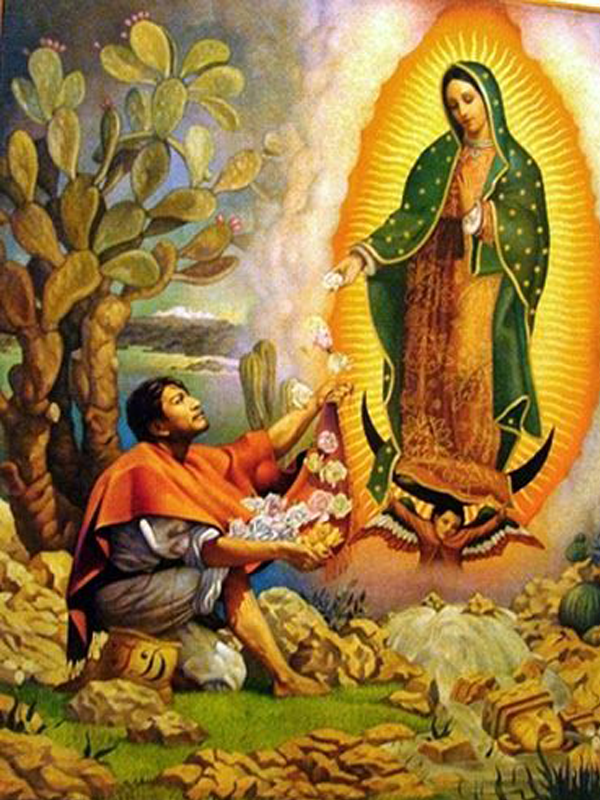

Nossa Senhora: Aparições
- 
-

Nossa Senhora de Fátima
Nossa Senhora de Fátima ou, formalmente, Nossa Senhora do Rosário de Fátima, é uma das invocações marianas atribuídas à Virgem Maria e que surgiu com base nas aparições recebidas por três pastorinhos no lugar da Cova da Iria, em Fátima, Portugal. De acordo com os testemunhos das três crianças videntes de Nossa Senhora, a primeira aparição da Virgem Maria terá ocorrido no dia 13 de maio de 1917 e o fenómeno repetiu-se durante seis meses seguidos, sempre no dia 13 (excetuando-se o mês de agosto, em que ocorreu a dia 19), até 13 de outubro de 1917. A aparição mariana identificou-se como sendo "a Senhora do Rosário", tendo sido, por esse motivo, feita eclesiasticamente a combinação dos seus dois títulos e o que deu origem a Nossa Senhora do Rosário de Fátima. Segundo os relatos dos videntes, a mensagem que a Virgem Maria apresentou em Fátima foi, na verdade, um insistente apelo à conversão, à penitência e à oração, nomeadamente a oração do Santo Rosário. O seu principal local de devoção é o próprio Santuário de Fátima, situado na freguesia e cidade homónima, no concelho de Ourém, em Portugal.
Nossa Senhora de Lourdes
Nossa Senhora de Lourdes é uma das invocações marianas atribuídas à Virgem Maria e que surgiu com base nos relatos das aparições que foram presenciadas por Santa Bernardete Soubirous, numa gruta de Lourdes, na França. Ocorreram no ano previsto por Nossa Senhora de La Salette, também em França, em 1846, doze anos antes, e foram reconhecidas pela Igreja Católica.
Nossa Senhora de Guadalupe
Nossa Senhora de Guadalupe[nota 2] (em espanhol: Nuestra Señora de Guadalupe, em náuatle: Tonantzin Coatlaxopeuh[7]) ou Virgem de Guadalupe é a denominação de uma aparição mariana da Igreja Católica de origem mexicana, cuja imagem tem como seu principal local de culto a Basílica de Guadalupe, localizada no sopé do monte Tepeyac, ao norte da Cidade do México. De acordo com a tradição oral mexicana,[8] e segundo textos de documentos históricos do Vaticano e outros encontrados ao redor do mundo em diferentes arquivos, acredita-se que a Virgem Maria, apareceu em quatro ocasiões ao índio São Juan Diego Cuauhtlatoatzin no monte Tepeyac, e em uma quinta ocasião a Juan Bernardino, tio de Juan Diego. O relato guadalupano conhecido como Nican Mopohua narra que na primeira aparição, a Virgem ordenou a Juan Diego que se apresentasse diante do bispo do México, Juan de Zumárraga. Juan Diego na última aparição da Virgem, e por ordem desta, levou em seu ayate algumas flores que cortou no Tepeyac. Juan Diego desdobrou sua tilma diante do bispo Juan de Zumárraga, deixando a descobrir a imagem da Virgem Maria, morena e com traços mestiços.
Nossa Senhora da Medalha Milagrosa
Esta invocação está relacionada a duas aparições da Virgem Maria a Santa Catarina Labouré, então uma noviça da Congregação das Filhas da Caridade de São Vicente de Paulo em Paris, França, no século XIX. A primeira aparição aconteceu na noite da festa de São Vicente de Paulo, dia 19 de julho de 1830, quando a Madre Superiora de Catarina pregou às noviças sobre as virtudes de seu santo fundador, dando a cada uma um fragmento de sua sobrepeliz. Catarina então orou devotamente ao santo patrono para que ela pudesse ver com seus próprios olhos a Mãe de Deus, e convenceu-se de que seria atendida naquela mesma noite.
Nossa Senhora de La Salette
é a invocação dada à Virgem Maria nas suas aparições na montanha de La Salette, departamento de Isère, na região dos Alpes franceses. Nossa Senhora teria aparecido a 19 de setembro de 1846 a duas crianças: Maximin Giraud com 11 anos e Mélanie Calvat com 15 anos. A veneração a Nossa Senhora de La Salette floresceu no século XX e, assim como Nossa Senhora de Lourdes (1858) e Nossa Senhora de Fátima (1917), continua a ser uma das mais famosas aparições da Virgem Maria na idade contemporânea. Possui fortes ligações com essas duas aparições marianas através da linha do tempo do segredo de La Salette e confirmada nas recomendações dadas em Lourdes e nos acontecimentos em Fátima.